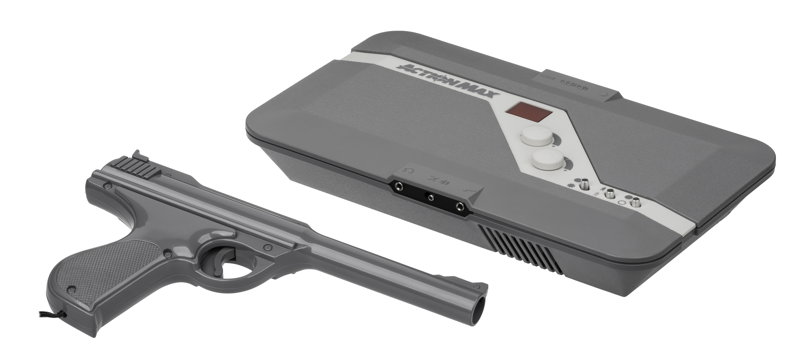
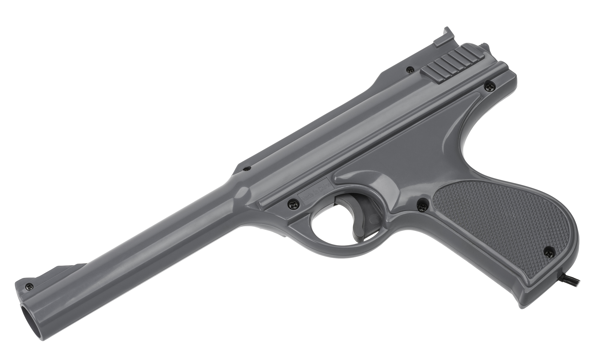

Worlds of Wonder Action Max
A VHS tape is the game cartridge, and a light gun reads screen brightness to score your shots

Overview
The Action Max is a 1987 home "video game console" produced by Worlds of Wonder (WoW) of Fremont, California — the toy startup founded by ex-Atari sales president Don Kingsborough that had already shipped Teddy Ruxpin and Lazer Tag. Rather than read a cartridge, the Action Max is a small plastic base unit that sits between a user-supplied VCR and a CRT television, paired with a jet-fighter–shaped light gun (the "Sonic Fighter"). Game content lives entirely on ordinary VHS tapes: pre-recorded full-motion-video sequences in which targets flash bright at the precise moments they are "shootable." The console itself does not modify the video signal — it only registers trigger pulls, increments a 2-digit 7-segment LED score display, plays hit/miss beeps through an internal speaker or the included stereo headphones, and flashes a separate suction-cup "Score Signal" light attached to the TV bezel. The console is built around a 4-bit Hitachi HD401010 (HMCS40-family) microcontroller — sufficient for trigger sampling, score counting, sound generation, and the score-signal driver. Only five tapes shipped before WoW's December 1987 Chapter 11 filing, making Action Max one of the shortest-lived console ecosystems in history and a textbook example of a light-gun-plus-linear-tape dead-end HCI paradigm.
Deep dive
Worlds of Wonder (WoW) was founded in 1985 in Fremont, CA, by Don Kingsborough (1941–2012), former president of sales & marketing at Atari's consumer division. After the Warner-to-Tramiel sale of Atari and the failed Nintendo-Atari distribution negotiation, Kingsborough and several ex-Atari colleagues (Mark Robert Goldberg, David Small, Paul Rago, Steve Race, Larry Lynch, Jim Whims, Mike Needleman, Richard Tuckley) left to form WoW. The company scored early hits with Teddy Ruxpin (1985) and Lazer Tag (1986), both of which used novel interaction technology — animatronic tape-driven storytelling and IR combat, respectively. The Action Max was WoW's quick, low-cost attempt to enter the home video-game hardware market by leveraging the installed base of VHS VCRs already in millions of homes. It launched in late 1987 — the same quarter as the Black Monday stock crash, a Lazer Tag misidentification shooting incident, a Nintendo distribution deal cancellation, and Teddy Ruxpin inventory mis-forecasting that together pushed WoW into Chapter 11 in December 1987. Action Max had effectively no runway.
The Action Max stack is unusually simple in hardware and unusually weird in concept. The player supplies their own VCR; the Action Max base unit is connected via an audio patch cord to the VCR's audio output (which feeds the headphones), and the gun is wired to the base unit. The VCR's video output goes directly to the TV — the console does NOT overlay graphics on the picture (a frequent secondary-source error). The Sonic Fighter pistol contains a lensed photocell behind the barrel and a trigger switch; no on-board processor. Pulling the trigger arms the photocell, which samples the brightness of whatever patch of screen it is pointed at on that frame. VHS tapes were authored with timed bright "hot spot" flashes at the moments a target was vulnerable — if the gun is aimed at a bright region at the trigger pull, the photocell voltage crosses threshold and the console registers a hit. Subtle differences in flicker pattern (largely invisible to the human eye) even encode target type — friendly/civilian targets vs. enemies, with hits on friendlies deducting points. The base unit's only outputs are: (1) the 2-character 7-segment LED score counter on its front (max 99), (2) hit/miss sound effects via internal speaker or headphones, and (3) a trigger signal to the suction-cup "Score Signal" lamp affixed to the TV that blinks to acknowledge a hit. The tape plays linearly for ~15 minutes regardless of input; there is no branching, no game state modification. The player cannot win or lose, only accumulate score. Power: 4× C batteries or 9V AC adapter.
Five launch tapes shipped: Sonic Fury (aerial jet combat, bundled with the console), .38 Ambush Alley (police target range), Blue Thunder (helicopter gunship tie-in to the 1983 Columbia film), Hydrosub: 2021 (futuristic underwater voyage), and The Rescue of Pops Ghostly (comic haunted-house adventure). Each ran about 15 minutes. After WoW's December 1987 Chapter 11 filing, no further titles were developed. Creditors operated WoW in receivership selling off existing inventory until final closure in late 1990, and Action Max units moved at clearance prices through the early 1990s. The console is now a collector's item, with the Evan-Amos / Vanamo Online Game Museum set on Wikimedia Commons (16 high-resolution photos) providing the canonical visual record.
The Action Max occupies a clean third corner of the museum's VHS-interaction design space. Bandai Terebikko (1988) uses VHS as an audio data channel decoded by a 4-button toy telephone — parasocial conversation. The deferred View-Master Interactive Vision (1988) uses VHS as a backdrop for console-generated 8-bit sprite overlay with dual-audio-track branching. The Action Max uses VHS as a visual target stream and the light gun as an optical input that reads brightness on the CRT phosphor — a console-as-score-only design with no game-state modification. The console is also a useful cautionary artifact: a single quarter of commercial life, a hardware ceiling that became obvious after ~15 minutes of play, and dependence on a separate consumer-owned VCR. It pairs naturally with the museum's other light/optical exhibits (Gibson Light Pen, Vectrex Light Pen, Sega SubRoc-3D periscope) and with the NES Zapper (1985, deferred) for a 'two paths for light-gun HCI' comparison. The Action Max is the doomed cousin: not iconic, not successful, but a real idea about what a game console could be.
Team & pioneers
- Worlds of Wonder (WoW). Fremont, California toy startup founded 1985 by ex-Atari sales president Don Kingsborough; defunct 1991 (operated in receivership from December 1987). Built Teddy Ruxpin, Lazer Tag, and Action Max.
- Don Kingsborough. Founder/CEO of WoW (1941–2012). Former president of sales & marketing at Atari's consumer division. Left Atari in 1984 after the Warner-to-Tramiel sale; founded WoW in 1985.
- Ex-Atari engineering team. WoW's small engineering team included several ex-Atari executives (Mark Robert Goldberg, David Small, Paul Rago, Steve Race, Larry Lynch, Jim Whims, Mike Needleman, Richard Tuckley). No individual product lead for Action Max is publicly credited.
Media

Sources
- Wikipedia: Action Max
- Wikipedia: Worlds of Wonder (toy company)
- Wikimedia Commons: Category:Action Max (16 Evan-Amos photos, PD/CC-BY-SA)
- Rozenkrantz, Jonathan (2017). 'Action Max: Notes on a Deictic Dispositif,' Residual Media Depot / Milieux Institute, Concordia University
- Gellene, Denise (1987-12-14). 'Big Trouble in Toyland,' Los Angeles Times
- Plunkett, Luke (2011). 'Only In The 80s Would They Put Video Games On A VHS Tape,' Kotaku
- Slaven, Andy (2002). Video Game Bible, 1985–2002, p. 352